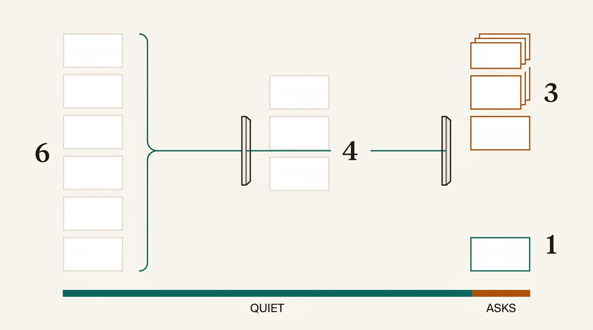

It works the ones that changed, and asks about almost none of them.

6
Bookings scanned
4
Actually needed work
3
Reached the host
1
Handled quietly
4
Policy clauses changed
Deterministic Python decides who gets interrupted. The model decides only how it is worded. Modelled exposure figures are weightings of a booking’s payout, not bills.